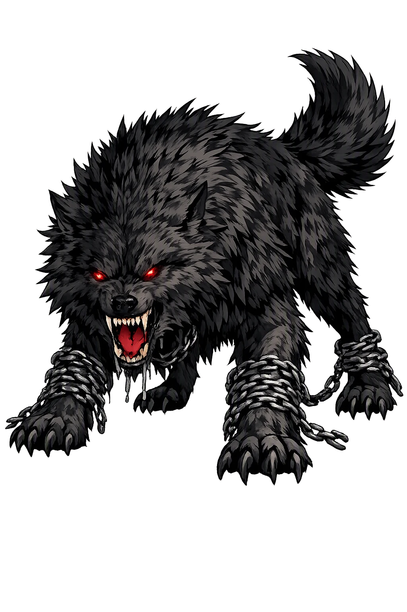
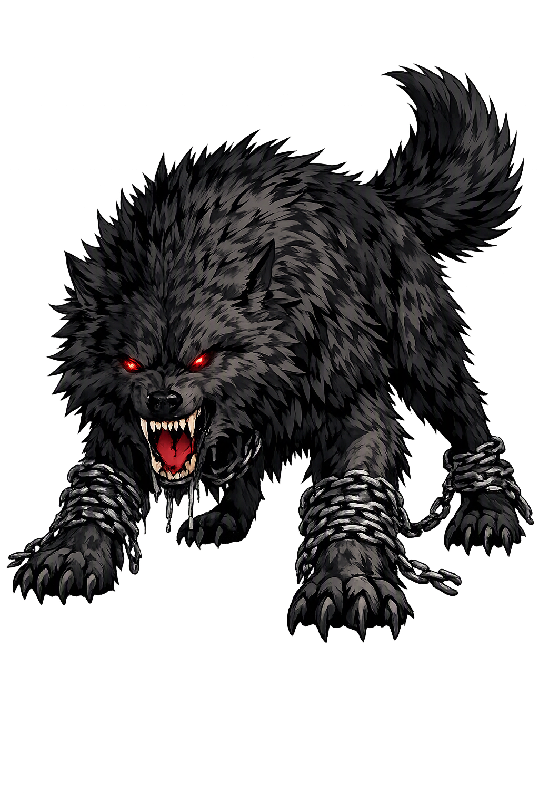

The Authentic Orthography
Wolf, Destruction, Binding · Fen-dweller (from fen + -ir)

Unicode restoration and ASCII comparison
ᚠᛁᚾᚱᛁᚱ
The name in its original Norse form. Fenrir (ᚠᛁᚾᚱᛁᚱ) is attested in the source tradition — “Fen-dweller (from fen + -ir)”. Its original diacritics and script distinctions carry the full phonetic and orthographic weight of the source tradition.
fenrir
The plain fenrir form is identical to the Unicode restoration. Because this name is already written in Latin letters, no diacritics, stress, or script information were lost — only capitalization differs.
Fenrir
The Unicode restoration does not need to recover lost marks for Fenrir. Its value is canonical spelling and consistent cataloguing, not the reconstruction of erased orthography. The domain is readable as-is to both DNS and humanity.
Fenrir.com → fenrir.com
The non-ASCII characters in Fenrir are encoded while the ASCII remains visible. To the DNS, it is Punycode. To humanity, it is Fenrir.
How Fenrir travels from ancient script to the modern URL
Owned, ideal, and ASCII forms of Fenrir
Fenrir
Restores ᚠᛁᚾᚱᛁᚱ. The full Unicode restoration. fenrir.com is not in the PuniCodex collection — it is watched for release; if it drops, this temple upgrades to an owned flagship.
How Fenrir was spoken
The Wolf Who Cannot Be Held
Fenrir is the monstrous wolf of Norse myth — the son of Loki and the giantess Angrboða, reared in the gods' own stronghold because no one dared do otherwise. When the prophecies said he would be Óðinn's death, the Æsir bound him: two fetters of iron broke like string, and the third — Gleipnir, the ribbon made of six things that do not exist — held, at the price of Týr's right hand. Gagged with a sword and chained to a stone beneath the earth, he lies on the isle of Lyngvi until Ragnarök, when he breaks free, swallows the Father of the Slain, and is torn jaw from jaw by Víðarr, the silent avenger.
Smooth and soft as a silken ribbon, made of six impossibles — the sound of a cat's footfall, a woman's beard, a mountain's roots, a bear's sinews, a fish's breath, a bird's spittle. Iron failed twice; impossibility held.
Týr alone laid his right hand in the wolf's jaws as surety that the fetter was no trap. When Gleipnir held, the wolf bit it off — the gods laughed, says Snorri, all but Týr.
Wedged in the raging jaws, hilt against the lower gum, point against the upper — and from the foam that runs from his mouth flows the river Ván, Expectation, until the world's end.
At Ragnarök the wolf swallows Óðinn; Víðarr sets his foot on the lower jaw, seizes the upper, and tears the beast apart — the son avenging the father, as the poems always said he would.
Stories of Fenrir
Fenrir's mythology is a single arc told in two registers: Snorri's prose gives the binding in full narrative, while the poems — older, allusive, apocalyptic — carry the prophecy and the end. Together they make the most complete monster-story the North preserves: birth, fostering, fetters, pledge, gag, and the waiting that ends at Ragnarök.
Hyndluljóð says it in a line: Loki begot the wolf with Angrboða — the giantess 'herald of sorrow' who dwells in Járnviðr, the Ironwood. Snorri names all three children of that union: the wolf Fenrir, Jǫrmungandr the world-serpent, and Hel, who is half the colour of the living and half of the dead. Because all were of giant stock and Loki's, and because the gods had heard prophecies that great harm would come of them, Óðinn had the children fetched.
He cast the serpent into the deep sea that lies around all lands, where it grew until it girdled the world; Hel he threw down into Niflheimr and gave her power over nine worlds. But the wolf the Æsir brought home with them and reared in their own stronghold — and only Týr had the courage to go to him and give him food.
The wolf grew at a pace the gods could watch, and the prophecies grew plainer: he was fated to harm them. So the Æsir made a strong fetter called Lœðingr and brought it to the wolf, challenging him to test his strength against it. The wolf judged himself equal to it, let them bind him, braced himself, kicked — and the fetter sprang apart; he was loose from Lœðingr.
The gods made a second fetter, half again as strong, called Drómi, and told the wolf he would win great fame if he broke it — such a fetter, they said, would not hold even a beast of his power. The wolf reasoned that fame was worth the risk, let them bind him, dashed himself against the ground, kicked — and Drómi flew in pieces far away. It is from this, Snorri says, that the saying comes: to break loose from Lœðingr or to dash out of Drómi, when things are pushed to the utmost.
Then the Allfather sent Skírnir, Freyr's messenger, down to Svartálfaheimr to certain dwarfs, and they made the fetter Gleipnir out of six things: the sound of a cat's footfall, the beard of a woman, the roots of a mountain, the sinews of a bear, the breath of a fish, and the spittle of a bird. It was smooth and soft as a ribbon of silk — and strong and firm, as the wolf was about to learn. The gods took him out to the islet of Lyngvi in the lake Ámsvartnir and showed him the ribbon, each god asking him to break it. The wolf grew suspicious: so slight a band could only be a trap, made by cunning. He refused to be bound — unless one of them, as a pledge that this was done in good faith, laid a hand in his mouth.
The Æsir looked at one another, and none would. Then Týr stepped forward and laid his right hand in the wolf's mouth. When the wolf struggled, the ribbon hardened, and the harder he struggled the tighter it held. Then all the Æsir laughed — except Týr: he lost his hand. They drew the cord that hangs from the fetter through a great stone slab called Gjǫll and sank the slab deep in the earth, and for a fastening-peg they drove a huge boulder, Þviti, deeper still. The wolf gaped hideously and snapped at them, and they thrust a sword into his mouth: the hilt against his lower gums, the point against the upper. He howls horribly, and the slaver runs from his mouth and makes the river called Ván, Expectation. There he lies until Ragnarök. Why did the gods not kill him, since the prophecies named him Óðinn's death? They had such respect for their own sanctuaries, Snorri says, that they would not stain them with the wolf's blood.
The poems had the end written long before Snorri wrote the beginning. In Vafþrúðnismál, Óðinn, disguised, questions the wise giant about the world's end, and the answers keep returning to the wolf: a daughter the sun shall bear before Fenrir catches her — and at the last, when Óðinn asks what his own doom will be, the giant answers: the wolf will swallow the Father of Men, and Víðarr will avenge him; he will tear apart the cold jaws of the beast in battle.
Vǫluspá's seeress sees the same scene: when Frigg's beloved goes to fight the wolf, her second grief comes to pass — Óðinn falls. Then comes the great son of the Father of Victory: Víðarr, to fight the beast of slaughter. With his hand he thrusts the sword into the heart of Hveðrungr's son — Loki's son — and so his father is avenged. Grímnismál gives the avenger his landscape: brushwood and high grass grow in Víðarr's land, where the son leaps from his horse's back, eager to avenge his father.
The binding left one permanent scar in the pantheon, and Loki never let it heal. In Lokasenna, when Týr speaks for the gods, Loki flings the price of Gleipnir in his face: you could never deal straight between two — I must mention your right hand, the one Fenrir tore from you. The wolf, bound and gagged beneath the earth, had already cost the god of the thing his sword-hand.
At Ragnarök the debt comes due. Snorri's vision of the last battle gives the wolf the sky itself: Fenrisúlfr goes with his mouth agape, the lower jaw against the earth, the upper against the heavens — he would gape wider if there were room — and fire burns from his eyes and nostrils. He swallows Óðinn, and at once Víðarr comes forward, sets one foot — shod in the shoe that has been gathering since the world began from every scrap of leather men cut from the toe and heel — upon the wolf's lower jaw, seizes the upper jaw with one hand, and tears the wolf's mouth apart. So dies the fen-dweller, and the world burns and sinks and rises green again without him.
Fenrir is the story a tradition told itself about what to do with the doom it cannot prevent. The gods cannot kill the wolf — prophecy has already named him, and their sanctuaries forbid the blood — so they bind him, and the binding costs the bravest just hand in the pantheon. Nothing about the arrangement is unjust on the surface: the wolf consents to each fetter, and the pledge is honestly given. But the myth knows what a pledge is for. Týr's hand in the jaws is the whole story in one image: order holds only because someone has already paid for it in flesh, and the price is not refundable. Every civilization chains some version of the fen-dweller and calls the chain permanent; the Edda's honesty is to say the chain is a delay — a good delay, bought at the right price, and worth it. Ván, the river that flows from the gagged jaws, means Expectation. Even the wolf's slaver knows how the story ends.
Enter Extended Lore